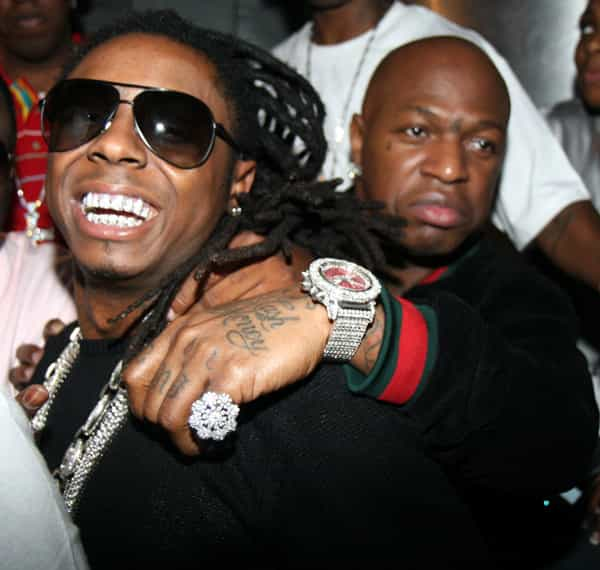
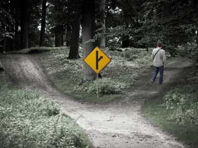

Vincent is an online entrepreneur currently living in beautiful Thailand. I've written books about seduction, manhood, and meditation. I write about seduction and host a podcast on my website, www.RealNaturalSeduction.com


Man needs adventure like he needs air. It tugs at him from his very core, calling him to go. Go where? Somewhere, anywhere. One of my gals blew my mind one night when she said “you know, we discovered the whole Earth, yet we’re afraid to go anywhere.” How right she is.
Adventure is a powerful catalyst for a man’s growth. It means going into the unknown, unexplored, undiscovered. It is the facing down of danger, uncertainty and unfamiliarity. It is a means of sharpening your awareness, your resourcefulness and your calm under pressure. Adventure grows nerve.
Notice how when you don’t go anywhere for a while, you start to feel bored, stagnant and repetitive. Even an otherwise interesting life can become a mundane routine without an occasional foray into the unknown. Adventure restores your relish for the quotidian and banal. And since life consists mostly of this day-to-day stuff, learning how to enjoy the little things is vital.
Take a trip to somewhere you’ve never been. Go alone. Hitchhike. Couchsurf. Book a ticket to another country and scare the crap out of yourself. You’ll come back home brimming with life and renewed enthusiasm for your life goals. Works every time.
Humans are group animals. We have an inherent need to belong to a group of like-minded people and to jockey for status within that group. The higher the status we’re able to achieve, the better we feel things are going. There’s a primal reward mechanism in our emotional circuitry that sends us feel-good chemicals for ascending to the upper echelon of a worthwhile hierarchy.
Not only that, but a good tribe supports you, encourages you and, equally as importantly, calls you out on your shit. They keep you honest and they keep you hungry. Even if you’re an introvert—actually, especially if you’re an introvert—you’ll never feel whole without earning your place in a strong tribe.
But pick your tribe carefully. If you don’t, their pettiness, childishness and complacency will rub off on you. But if you pick well, the bonds you make and the warmth and inspiration of other, similarly driven people will keep you on the straight and narrow of responsible manhood. And you may develop friendships that will last a lifetime.

A man who doesn’t test and strive to surpass his physical limits only really lives half of life. Life is in the body as much as it is in the mind. Your body is the vehicle that navigates the roads of existence. And you can choose to drive through life with a primitive model-T or a badass, tricked out sports car. The choice is yours.
Perhaps the very best form of exercise for a man is heavy lifting. The benefits are innumerable but allow me to enumerate a few anyway. It reduces stress, improves your look, skyrockets libido, reverses aging and imbues you with a ton of confidence. While calisthenics, swimming, yoga, etc., are all fine and good, they simply don’t bring about the incredible physiological response that ass-to-the-grass squats, heavy deadlifts and heavy presses do.
Try a few weeks of heavy lifting and you’ll quite literally feel like a different man. Give it a few months and you’ll be hooked on the feeling. Just ask Arnold:

A man’s got to know how to defend himself and those he cares about. If you’re burning your candle at both ends and living an exciting life of travel and adventure, chances are good that at some point, some idiot is going to get in your face.
Learning how to fight also entails understanding when not to fight. But when it can’t be avoided (or when you just feel like, fuck it, I want to fight) then you can’t just stand there and get your ass handed to you. Learn how to throw a punch, an elbow and a knee. Learn how to shoot a double leg and how to choke a fool out. Learn basic headlock defense. Learn something useful.
With Brazilian jiu jitsu, boxing, muay thai and mixed martial arts gyms mushrooming all over the world, there’s really no excuse not to at least learn the basics of self-defense. You may never need to use what you learn. But it’s better to have the skills and not need them than to need the skills and get the crap kicked out of you (or worse).
Men need women. Lots of them. The hotter the better. You can have all of your other ducks in a row but if you can’t attract and seduce the kinds of girls you want, you’ll never feel complete as a man. And don’t let anybody feed you the feel-good B.S. that whether or not you possess this ability, it has no bearing on your worth as a man. It does and everybody knows it. So do something about.
The man who ‘gets it’ can go basically anywhere in the world, enter into just about any social situation and probably manage to hook up with a cute chick. This is a skill (yes, a skill!) that maybe 1% of all men have taken the pains to refine to a high level. Call it ‘game’, ‘seduction’, or ‘pick up’, this ability to get girls is simply non-negotiable for a man who wants a full life.
When you can fill your days and nights with the company of beautiful, sexy, quality girls, your whole existence will be incredibly rich and colorful. For all the mischief they cause, without women, the life of men would be missing all its juice.

God, we’ve been duped so much. Ever hear that “money doesn’t buy happiness”? Well, that’s only semi-true. Money doesn’t buy happiness by itself. I’ve met a lot of miserable men with fat bank rolls. I bet you have too. But it’s rare to meet a broke dude who has the ability to enjoy life the same way that a man with means can.
The idea that you can be broke and happy is a slap in the face to any guy who has ever been truly broke. I’ve gone from relative rags to relative riches twice and I can confirm that the only enjoyable parts of being a bum are the lack of immediate responsibility and the prospect of building a new life the way you picture it.
It’s true that living in your car can satiate the need for adventure. But that excitement soon gives way to the realization that you’ve got to crawl out of a big ass ditch and make something of yourself before life passes you by.
Money isn’t everything but it’s a lot. It gives you the ability to live according to your own terms. It’s not the end but it’s certainly the best means to a lot of your ends, whether it’s traveling, enjoying fine dining, indulging in your hobbies, or what have you.

Alignment is hard to describe to somebody who hasn’t felt it. If you’ve never tasted sugar, then no matter what I do, I won’t be able to convey the taste of it to you. I’d have to force a spoonful of sugar in your mouth for you to comprehend it.
When you’re moving in the direction you want, according to your own vision of how you want your life to look, and you’re doing everything in your power to make that vision a reality, you’ll feel ‘aligned’. The methodology to achieve this feeling is really quite simple: you ask yourself “what do I want?” and you do that thing. As a corollary, when you encounter something you don’t want to do, then you do not do that thing.
This is a topic I explore in my book, Real Natural Manhood. And it’s often misunderstood. You may say “how can you ever achieve anything in life if you avoid doing some things—many things, in fact—that you don’t want to do?” This question sounds valid semantically but if you simply try what I’m suggesting, you’ll see for yourself just how it works.
What I mean is this: if, for instance, your most burning, overarching desire is to travel, own an online business and chase tail all over the world, then you will do whatever’s necessary to make that happen. And you will want to do it, even if you want to do it. If, on the other hand, you become a doctor because your parents guilted you into it, and you married because you were pushed by your church pastor, and had kids because our grandmother kept insisting that you owe her grandkids, then every action you take will have the fragrance of reluctance. It will all be an act.
Supporting somebody else’s vision for your life is the saddest kind of waste a man can allow. Martyrdom has no place in the superior man’s life. Everything must come from a deep sense of “what do I want?” Then, any sacrifice you make won’t be a sacrifice. It won’t be some empty martyrdom. It will be a challenge that you welcome because it’s on the road to where you want to go. And that’s the difference.
Read More: The Different Paths Of Western Manhood